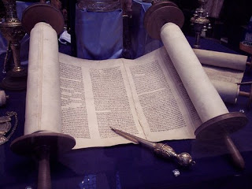

Gittin 60 - How was the Torah written down?

When reading the Haftarah, it is better to read from a complete Tanach, rather than from a book containing haftarah selections, to show respect for the listeners.
Was the Torah written on a complete scroll?
No, it was written on separate scrolls, which Moshe connected together before his death. Proof? - " Then said I: Lo, I am come with the scroll of a book which is prescribed for me. " Yes: Moshe remembered every section as it was taught, and then wrote them all before his death. Proof? - " Take this book of the law ."